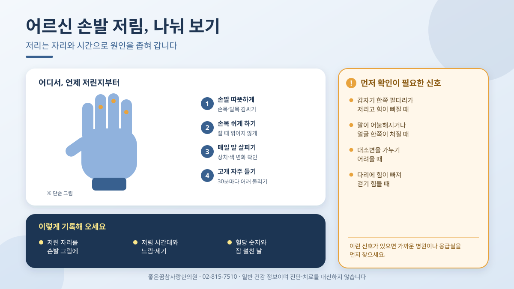

이종호 한의사 감수좋은꿈참사랑한의원 대표원장 (한의사 면허번호 19769)발행 2026-11-26 · 수정 2026-11-26
이 글의 차례
텔레비전을 보시다가 손을 주무르시고, 잠자리에 드셔서도 발을 이불 밖으로 내놓았다 넣었다 하시는 어르신이 계십니다. "손끝이 찌릿찌릿하고, 발바닥은 뭘 하나 붙여 놓은 것 같아." 자녀분이 걱정되어 여쭤 보면 오래된 일이라며 대수롭지 않게 말씀하십니다.
연세가 들수록 손발 저림을 호소하시는 분이 많아집니다. 그런데 저림은 이름 하나로 묶이지만, 그 안을 들여다보면 이유가 무척 다양합니다. 목에서 내려오는 저림, 손목에서 눌리는 저림, 혈당과 관련된 저림, 혈액순환이나 몸의 냉기와 관련된 저림이 서로 다른 모습으로 나타납니다.
어르신은 이 가운데 두세 가지가 겹쳐 있는 경우가 많습니다. 목도 조금 불편하고, 당뇨도 있고, 손목도 많이 쓰셨다면 저림이 어디서 오는지 하나로 딱 잘라 말하기 어렵습니다. 그래서 진료실에서는 저리는 자리와 시간, 함께 있는 불편을 하나씩 나눠 여쭙니다.
이 글에서는 어르신 손발 저림을 어떻게 나눠 볼 수 있는지, 집에서 무엇을 살피고 기록하면 좋은지, 병원 진료와 한의원 진료를 어떻게 함께 가져가면 좋은지 정리해 보겠습니다.
어르신 손발 저림은 어디서 올 수 있나요
저림은 신경이 보내는 신호가 어딘가에서 방해를 받을 때 생깁니다. 신경은 목과 허리의 척추에서 나와 팔과 다리를 따라 손끝, 발끝까지 길게 이어지는데, 이 긴 길의 어느 지점에서든 눌리거나 약해지면 저림이 나타날 수 있습니다.
그래서 저림을 살필 때는 길을 거꾸로 거슬러 올라가 보는 것이 좋습니다. 손끝이 저리다면 손목, 팔꿈치, 어깨, 목을 차례로 살피고, 발이 저리다면 발목, 무릎 뒤, 엉덩이, 허리를 차례로 살핍니다. 길 전체가 고르게 약해진 경우도 있습니다.
연세가 들면 척추 사이가 좁아지고 인대가 두꺼워지면서 신경이 지나는 통로가 좁아지기 쉽습니다. 손목 안쪽 통로도 마찬가지입니다. 여기에 혈당이나 혈액순환 문제가 겹치면 신경 자체가 예민해지거나 둔해집니다.
왜 나이 들수록 손발 저림이 늘어날까요
어르신 손발 저림이 늘어나는 이유를 나눠 보면 대략 다음과 같습니다. 한 분에게 여러 가지가 함께 있는 경우가 많습니다.
- 목이나 허리 척추 사이가 좁아져 신경이 눌리는 경우
- 손목 안쪽 통로가 좁아져 손가락이 저린 경우
- 오래된 당뇨로 발끝부터 감각이 둔해지는 경우
- 다리 혈관이 좁아져 걸을 때 다리가 저리고 아픈 경우
- 비타민 B12 같은 영양소가 부족해진 경우
- 드시는 약 가운데 저림에 영향을 줄 수 있는 약이 있는 경우
이 가운데 비타민 B12 부족은 의외로 흔하게 놓칩니다. 연세가 들면 위에서 흡수가 줄어들고, 일부 당뇨약이나 위산을 줄이는 약을 오래 드시면 더 부족해지기 쉽습니다. 내과에서 피검사로 확인할 수 있으니 오래 저리셨다면 한 번 여쭤 보세요.
한의학에서는 손발 저림을 기운과 혈이 손발 끝까지 잘 닿지 못하는 모습으로 봅니다. 몸이 차서 흐름이 막히는 경우, 기운과 혈이 부족해 끝까지 채우지 못하는 경우, 습한 기운이 막아 무겁고 저린 경우 등으로 나눠 생활에서 신경 쓸 부분을 정합니다.
저리는 자리와 시간으로 나눠 보기
저림을 나눠 볼 때 가장 쓸모 있는 것은 어디가, 언제 저린지입니다. 같은 손 저림이라도 아래처럼 모습이 다르면 살피는 방향이 달라집니다.
엄지부터 약지 절반까지 저리고 새벽에 손이 저려 깨시며, 손을 털면 좀 나아진다면 손목 쪽 통로를 먼저 생각합니다. 새끼손가락과 약지 쪽이 저리고 팔꿈치를 오래 굽힐 때 심해진다면 팔꿈치 쪽 신경을 살핍니다.
목을 뒤로 젖히거나 한쪽으로 돌릴 때 어깨에서 팔을 타고 저림이 내려온다면 목에서 오는 저림일 수 있습니다. 한쪽 팔에만 나타나는 경우가 많고, 뒷목과 어깨의 뻐근함이 함께 있는 경우가 흔합니다.
발의 경우, 양쪽 발끝부터 양말을 신은 것처럼 둔해지며 서서히 위로 올라온다면 당뇨나 영양 문제처럼 몸 전체에서 오는 저림을 먼저 생각합니다. 걸으면 다리가 저려 쉬어야 하고 허리를 숙이면 편해진다면 허리 쪽 통로를 살핍니다.
걸을 때 종아리가 조이듯 아프고 저려 멈추면 금방 풀리는데, 허리를 숙이지 않아도 그렇다면 다리 혈관 쪽도 함께 살펴볼 필요가 있습니다. 이런 경우에는 내과나 혈관 쪽 진료를 함께 권해 드립니다.
저린 것과 시린 것, 둔한 것은 다릅니다
어르신들은 여러 느낌을 '저리다'는 한 단어로 말씀하시는 경우가 많습니다. 하지만 찌릿찌릿 전기가 오는 느낌, 바늘로 콕콕 찌르는 느낌, 얼음처럼 시린 느낌, 만져도 남의 살 같은 둔한 느낌은 서로 다른 신호입니다.
특히 둔한 느낌은 조심해서 살핍니다. 감각이 둔해지면 발에 상처가 나도 모르고 지나가거나, 뜨거운 물에 데어도 늦게 알아채는 일이 생깁니다. 발이 둔하다고 하시는 어르신은 매일 발을 들여다보는 습관이 무척 중요합니다.
시린 느낌은 몸의 냉기나 혈액순환과 가까운 경우가 많습니다. 겨울에 더 심해지고 따뜻하게 하면 나아진다면 이쪽을 먼저 생각합니다. 진료실에서 느낌을 하나씩 나눠 여쭙는 이유가 여기에 있습니다.
저림 때문에 생기기 쉬운 일상의 불편
손이 저리고 둔해지면 단추를 채우거나 젓가락질을 하는 것이 불편해지고, 컵을 놓치는 일이 늘어납니다. 어르신은 이런 일이 반복되면 자신감이 떨어지고 바깥 활동을 줄이시기도 합니다.
발이 저리고 둔해지면 바닥을 딛는 느낌이 흐려져 걸음이 불안해집니다. 문턱에 걸리거나 계단에서 헛디디는 일이 늘어나니, 집 안 조명과 미끄럼 방지에도 신경을 써 주시면 좋습니다.
밤에 저림이 심해 잠을 설치시는 분도 많습니다. 잠을 못 주무시면 낮에 기운이 떨어지고, 기운이 떨어지면 저림이 더 크게 느껴지는 일이 반복됩니다. 그래서 저림과 함께 잠도 같이 살핍니다.
손발 저림을 두고 자주 헷갈리는 것
첫째, 저림은 모두 혈액순환 탓이라는 생각입니다. 순환이 관련된 경우도 있지만, 목이나 손목에서 신경이 눌려 생기는 저림은 순환만 챙겨서는 잘 달라지지 않습니다. 어디서 오는지 먼저 나눠 보는 것이 순서입니다.
둘째, 나이 들면 원래 저린 것이니 참아야 한다는 생각입니다. 연세가 들며 저림이 흔해지는 것은 맞지만, 원인에 따라 생활에서 바꿀 수 있는 부분이 분명히 있습니다. 특히 혈당이나 영양 문제는 일찍 알수록 챙길 것이 많습니다.
셋째, 저린 곳을 세게 주무르고 두드릴수록 좋다는 생각입니다. 저린 자리는 신경이 예민해져 있는 경우가 많아서, 세게 자극하면 오히려 더 화끈거리고 불편해질 수 있습니다. 부드럽게 쓸어 주고 따뜻하게 감싸는 쪽이 좋습니다.
넷째, 한쪽만 저리면 별일 아니라는 생각입니다. 한쪽만 저린 경우에는 목이나 허리, 손목처럼 그쪽 신경이 지나는 길에서 눌리는 곳이 있는지 살펴봐야 합니다. 양쪽이 고르게 저린지, 한쪽만 저린지 구분해 말씀해 주시면 큰 도움이 됩니다.
먼저 이렇게 여쭙니다
처음 오시면 대략 이런 순서로 여쭙니다. 미리 생각해 오시면 이야기가 수월해집니다.
- 손과 발 가운데 어디가, 한쪽인지 양쪽인지 저리시나요?
- 저림은 언제부터, 하루 중 언제 가장 심한가요?
- 찌릿한지, 시린지, 둔한지 어떤 느낌에 가까운가요?
- 당뇨, 갑상선, 혈압 같은 병이 있으신가요?
- 드시는 약과 영양제는 무엇인가요?
- 목이나 허리가 아프신 적이 있나요? 걸으면 다리가 저려 쉬시나요?
최근 받으신 건강검진 결과지가 있다면 함께 가져와 주세요. 혈당, 당화혈색소, 빈혈 수치 같은 결과가 저림을 나눠 보는 데 도움이 됩니다.
젓가락질이나 단추 채우기, 걷기처럼 일상에서 불편해진 일이 있는지도 여쭙니다. 저림의 세기보다 생활이 얼마나 불편해졌는지가 어디까지 함께 살필지 정하는 데 더 중요한 기준이 되기도 합니다.
일상에서 먼저 해 볼 수 있는 것
손발 저림은 생활 속 작은 습관으로 조금씩 달라지는 부분이 있습니다. 무리하지 않는 범위에서 하나씩 해 보세요.
- 손발을 따뜻하게, 특히 발목과 손목을 감싸 두기
- 손을 오래 쓰신 뒤에는 손목을 쉬게 하고 손가락을 천천히 펴 보기
- 잠잘 때 손목이 꺾이지 않도록 편하게 두기
- 하루 한두 번 천천히 걸으며 종아리 움직이기
- 매일 발을 들여다보며 상처나 색 변화 확인하기
- 혈당이 있는 분은 처방대로 약을 드시고 혈당 기록하기
발을 씻으실 때는 물 온도를 손으로 먼저 확인하세요. 발의 감각이 둔해진 분은 뜨거운 물을 미지근하게 느끼실 수 있습니다. 씻은 뒤에는 발가락 사이까지 잘 말리고, 건조하면 보습제를 발라 갈라지지 않게 해 주세요.
목에서 오는 저림이 의심되는 분은 고개를 숙이고 휴대폰이나 신문을 오래 보시는 습관을 줄여 보세요. 30분에 한 번은 고개를 들어 어깨를 천천히 돌려 주는 것이 좋습니다. 높은 베개도 목을 꺾이게 할 수 있습니다.
손을 주무를 때는 세게 누르기보다 손가락 끝에서 손목 쪽으로 부드럽게 쓸어 올리는 것이 좋습니다. 저린 자리를 아프게 두드리거나 세게 비비면 오히려 예민해질 수 있습니다.
잠자리에서 손발이 저려 깨신다면 잠들기 전에 손목과 발목을 따뜻한 물에 몇 분 담갔다가 잘 말려 보세요. 몸이 데워진 상태로 잠자리에 드시면 새벽에 저려서 깨는 일이 줄어드는 분이 있습니다.
한의원에서 함께 살필 수 있는 경우
- 병원 검사를 마쳤지만 저림과 시린 느낌이 이어지는 경우
- 목과 어깨가 굳으면서 팔과 손이 저린 경우
- 손발이 차고 저려 밤잠을 설치시는 경우
- 허리와 엉덩이가 뻐근하면서 다리가 저린 경우
- 저림과 함께 기운이 떨어지고 입맛이 줄어든 경우
좋은꿈참사랑한의원에 오시면 먼저 아래 '먼저 확인이 필요한' 신호가 없는지부터 봅니다. 그다음 맥을 짚고, 손발 온도와 색, 목과 허리, 손목의 움직임을 확인합니다. 어르신의 체력과 앓고 계신 병을 함께 고려해 무리가 없는 방향을 찾습니다.
진찰한 내용을 바탕으로 생활에서 바꿔 볼 것 하나와 함께 침, 약침, 추나요법, 물리치료, 한약 상담 가운데 지금 상태에 맞는 것을 고릅니다. 연세와 뼈 상태를 고려해 추나요법은 신중하게 정하고, 한약은 드시는 약을 모두 확인한 뒤 신중하게 상의합니다.
어르신 손발 저림은 내과나 신경과 진료와 함께 가는 것이 좋습니다. 혈당과 피검사, 신경 검사가 필요한 부분은 병원에서 확인하시고, 한의원에서는 그 사이의 냉기, 근육의 굳음, 잠과 기운을 함께 살핀다고 생각해 주세요. 처방받은 약은 처방한 선생님과 상의 없이 멈추지 않습니다.
이렇게 기록해 오시면 상담이 쉬워집니다
저림은 날마다 조금씩 달라서, 진료실에서 한 번 여쭙는 것보다 일주일 기록이 훨씬 많은 것을 알려 줍니다.
- 저린 자리를 그린 간단한 손발 그림
- 저림이 심했던 시간대(새벽·낮·밤)
- 저림의 느낌(찌릿·시림·둔함)과 세기 1~10
- 오래 걸었거나 손을 많이 쓴 날 표시
- 추웠던 날, 잠을 설친 날 표시
- 혈당을 재신다면 그날의 숫자
손발 그림은 종이에 손과 발 모양을 대충 그리고 저린 자리에 색칠만 해 오셔도 충분합니다. 일주일 뒤 그림이 넓어졌는지, 좁아졌는지만 봐도 흐름을 짐작할 수 있습니다.
가족이 함께 살펴 주시면 좋은 것
어르신이 물건을 자주 떨어뜨리시거나, 걸음이 조심스러워지셨거나, 발에 생긴 상처를 모르고 계셨다면 저림이나 감각 저하가 생각보다 진행되었을 수 있습니다. 이런 모습을 보셨다면 진료 때 함께 말씀해 주세요.
어르신의 발은 가족이 가끔 함께 들여다봐 주시면 좋습니다. 허리를 숙여 발바닥을 보시기 어려운 분이 많기 때문입니다. 발톱이 살을 파고들지는 않는지, 굳은살이 갈라지지는 않았는지 살펴 주세요.
이런 증상은 먼저 확인이 필요합니다
- 갑자기 한쪽 팔다리가 저리면서 힘이 빠지거나 말이 어눌해지고 얼굴 한쪽이 처지는 경우
- 다리 저림과 함께 대소변을 가누기 어렵거나 다리에 힘이 빠져 걷기 힘든 경우
이런 신호가 있으면 한의원보다 가까운 병원이나 응급실을 먼저 찾으세요.
함께 읽으면 좋은 글
- 손발이 저리고 차가울 때는 어떤 점을 먼저 확인하나요?
- 당뇨가 있는데 발끝이 저리고 화끈거리거나 감각이 둔해지는 말초신경병증은 어떻게 살피나요?
- 걸으면 다리가 저려 자꾸 쉬어야 하는 척추관 협착증은 어떻게 살피나요?
- 새벽에 손이 저려 깨는 손목터널증후군은 어떻게 살피나요?
- 나이 들며 자주 어지럽고 걸음이 휘청이는 노인 어지럼은 어떻게 살피나요?

여쭙는 것
- 손과 발 가운데 어디가, 한쪽인지 양쪽인지 저리시나요?
- 저림은 언제부터, 하루 중 언제 가장 심한가요?
- 찌릿한지, 시린지, 둔한지 어떤 느낌에 가까운가요?
생활에서 해 볼 것
- 손발을 따뜻하게, 특히 발목과 손목을 감싸 두기
- 손을 오래 쓰신 뒤에는 손목을 쉬게 하고 손가락을 천천히 펴 보기
- 잠잘 때 손목이 꺾이지 않도록 편하게 두기
한의원에서 함께 살필 것
- 병원 검사를 마쳤지만 저림과 시린 느낌이 이어지는 경우
- 목과 어깨가 굳으면서 팔과 손이 저린 경우
- 손발이 차고 저려 밤잠을 설치시는 경우
먼저 확인이 필요한 신호
- 갑자기 한쪽 팔다리가 저리면서 힘이 빠지거나 말이 어눌해지고 얼굴 한쪽이 처지는 경우
- 다리 저림과 함께 대소변을 가누기 어렵거나 다리에 힘이 빠져 걷기 힘든 경우
한눈에 보는 표
| 구분 | 핵심 |
|---|---|
| 여쭙는 것 | 손과 발 가운데 어디가, 한쪽인지 양쪽인지 저리시나요? 저림은 언제부터, 하루 중 언제 가장 심한가요? |
| 생활에서 해 볼 것 | 손발을 따뜻하게, 특히 발목과 손목을 감싸 두기 손을 오래 쓰신 뒤에는 손목을 쉬게 하고 손가락을 천천히 펴 보기 |
| 한의원에서 함께 살필 것 | 병원 검사를 마쳤지만 저림과 시린 느낌이 이어지는 경우 목과 어깨가 굳으면서 팔과 손이 저린 경우 |
| 먼저 확인이 필요한 신호 | 갑자기 한쪽 팔다리가 저리면서 힘이 빠지거나 말이 어눌해지고 얼굴 한쪽이 처지는 경우 다리 저림과 함께 대소변을 가누기 어렵거나 다리에 힘이 빠져 걷기 힘든 경우 |
자주 묻는 질문
오래전부터 저렸는데 이제 와서 진료를 받아도 의미가 있을까요?
오래된 저림이라도 지금 어디서, 어떤 모습으로 저린지를 나눠 보면 생활에서 바꿀 수 있는 부분을 찾을 수 있습니다. 병원 검사를 받으신 지 오래되었다면 이번에 함께 확인해 보시길 권합니다.
손발이 저리면 혈액순환제를 먹으면 되나요?
저림은 이유가 여러 가지라서 한 가지 약으로 정리되지 않는 경우가 많습니다. 영양제나 순환제를 드시고 계신다면 진료 때 알려 주시고, 저림의 원인을 먼저 나눠 보시길 권합니다.
어르신도 추나요법을 받으실 수 있나요?
연세, 뼈 상태, 앓고 계신 병을 확인한 뒤 신중하게 정합니다. 골다공증이 있거나 수술을 받으신 적이 있다면 미리 말씀해 주시고, 무리가 된다고 판단되면 다른 방법을 함께 고릅니다.
드시는 약이 많은데 한약을 함께 드셔도 되나요?
드시는 약을 모두 확인하고 신중하게 정합니다. 특히 혈당약이나 피를 묽게 하는 약을 드신다면 처음에 꼭 말씀해 주시고, 필요하면 처방한 선생님과 상의하시도록 안내합니다.
좋은꿈참사랑한의원은 재진 때 지난번 이야기부터 이어서 여쭙니다. 진료시간과 예약은 오시는 길에서 확인하세요.
어디서 상담받을 수 있나요?
좋은꿈참사랑한의원은 서울 동작구 만양로2길 2 신성빌딩 3층·5층(서울 동작구 상도동, 7호선 상도역 3번 출구 근처)에 있습니다. 한의사 3명(이종호 대표원장, 조영기 수석진료원장, 정원영 진료원장)이 진료합니다. 진료시간은 평일 09:30~20:00(점심 13:00~14:00), 토·일·공휴일 09:30~15:00이며, 방문 전 전화로 확인을 권합니다. 예약은 네이버 예약, 카카오톡 상담, 전화 02-815-7510로 받습니다.
이 글은 일반적인 건강 정보이며 개인의 진단이나 치료를 대신하지 않습니다. 증상이 있거나 복용 중인 약이 있다면 진료를 통해 확인하세요. 치료 효과는 개인마다 다를 수 있습니다.
작성 기준: 일반적으로 알려져 있는 건강 정보를 참고해 정리했습니다(대표원장 감수). 증상 기록은 1~2주 동안 하루 1회, 비슷한 시간에 적어 오시면 지난 상태와 비교하기 쉽습니다.